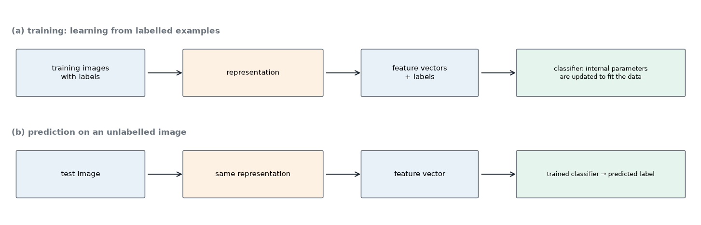
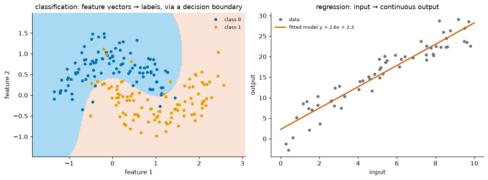
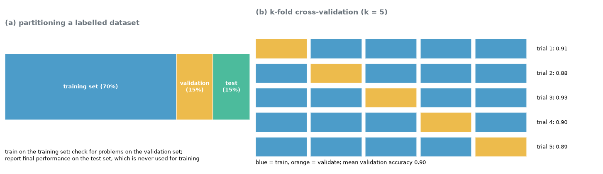
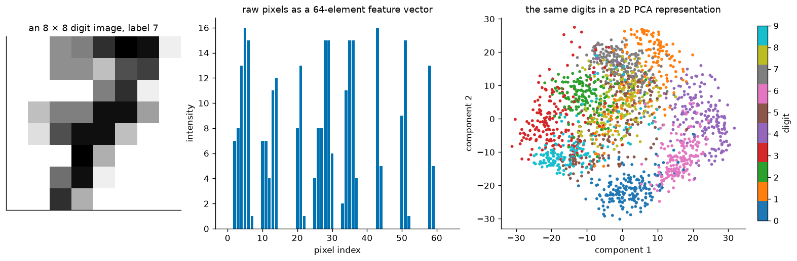
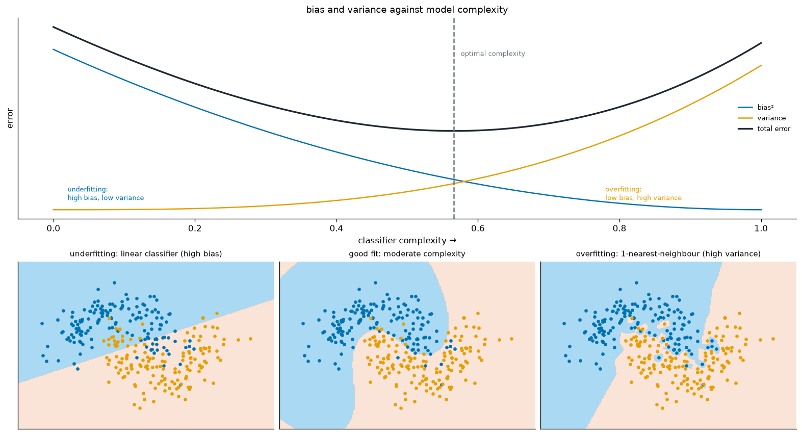
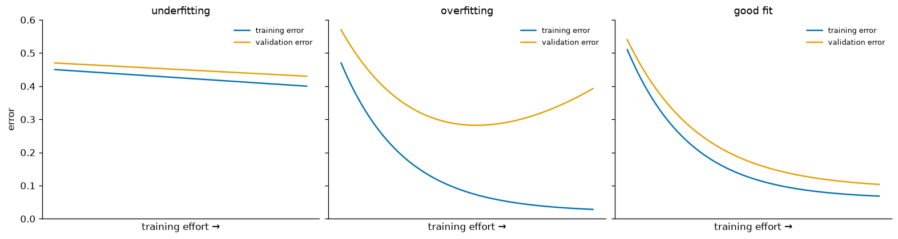
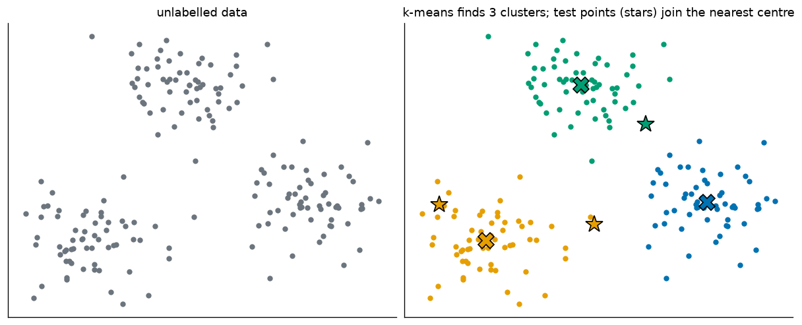

Lesson 04.02
Machine learning for image recognition
The supervised learning framework: labelled datasets and how to partition them, features and representations, classifiers and their complexity, bias and variance, overfitting and generalisation, and a note on unsupervised learning.
Learning outcomes
After this lesson you should be able to:
- describe supervised learning and its components: dataset, representation, classifier;
- explain why datasets are split into training, validation and test sets and how k-fold cross-validation works;
- distinguish image features from machine-learning features, and explain what makes a representation discriminative;
- explain bias and variance, recognise underfitting and overfitting from error curves, and list remedies;
- state what generalisation means and how unsupervised learning differs.
Image recognition with machine learning
Classification and object detection are hard because of the challenges listed in the previous lesson. Feature detectors and descriptors match objects between images robustly, but only specific objects, and only rigid ones such as statues or toys. To classify images or recognise objects in general we turn to machine learning: "the scientific study of algorithms and statistical models that computer systems use to perform a specific task without explicit instructions, relying on patterns and inference instead."
Supervised learning
Supervised learning is the dominant paradigm in computer vision, from simple classifiers to state-of-the-art deep learning. It formalises learning from examples: the system learns from a labelled training set, and the presence of labels is its defining feature. Images are converted to a representation and the resulting feature vectors, with their labels, are used to train the classifier; training updates the classifier's internal parameters so that it can predict the classes of unlabelled test images.

Classification versus regression
Supervised learning trains both classifiers and regression models. A classifier maps input features to labels, and can be understood as learning a decision boundary between classes. A regression model learns a direct relationship between input and a continuous output. This module trains classifiers.

Datasets
Many labelled datasets are publicly available, and their number and complexity have grown with big data and deep learning. Small early datasets such as MNIST handwritten digits and CIFAR-10 and CIFAR-100 remain useful for prototyping; large ones such as ImageNet (1000 classes) and Microsoft COCO enabled deep networks for classification and detection; and there are specialised datasets such as Cityscapes for driving scenes and CelebA for facial attributes.
Partitioning a dataset
Besides the training set we need a smaller validation set, used to detect problems during training, and a small test set to evaluate the trained classifier. The test set must never be used for training, or the performance will be over-estimated. Some datasets come already partitioned; often we partition them ourselves. With limited data, k-fold cross-validation draws the validation set from the training data in k different ways, trains k times, and averages the validation accuracies; the average should be close to the final test result, whereas a single split might under- or over-estimate the performance.

Features and representations
Two meanings of feature must be separated. Image features are edges, corners, blobs and other regions of interest that we detect and describe. In machine learning a feature is any "measurable property of the phenomenon being observed", a much more general idea. For a vision problem the feature vector could simply be the raw pixels, which suffices for simple tasks such as MNIST digits, but raw pixels contain a great deal of redundant information and give low accuracy on harder problems.
The method of transforming images into discriminative feature vectors is the representation. Redundancy can be reduced with a compressed representation such as principal component analysis (Section 5); descriptors of image features and regions can form the feature vector, as in the HOG pedestrian detector; and still higher-level representations such as the bag of features (Section 6) are more discriminative again. Low-level representations for high-level tasks lead to high computational cost, difficulty in convergence and low accuracy, so a representation must be discriminative, and designing one is feature engineering.

Classifiers
Many classifiers are used in vision: the simple k-nearest-neighbours classifier suffices for some tasks such as simple face recognition, the support vector machine is used in many applications, and simple neural networks also serve as classifiers (the next lesson covers them). A classifier learns decision boundaries in the input data through a set of parameters. Some classifiers are simple with few parameters, others complex with many, and the right complexity for an application is found from experience and by trial and error.
Classifier complexity: bias and variance
Two sources of error affect any trained classifier. Bias is the error inherent in the classifier's model: a linear classifier can only produce a straight decision boundary. Variance is how much the result changes with different training data. Plotting error against model complexity gives a U-shaped total error: bias is highest for simple classifiers and falls with complexity, variance is lowest for simple classifiers and rises with complexity, and the minimum lies at some optimal complexity.
A simple classifier underfits: high bias, low variance, a boundary that does not fit the data. A very complex classifier overfits: low bias, high variance, a convoluted boundary that changes completely with each batch of training data. The optimum follows the general trend of the data without fitting outliers.

Detecting underfitting and overfitting
Under- and overfitting are detected by inspecting the training and validation errors during training. In underfitting both remain high however long training continues. In overfitting the training error keeps falling while the validation error first falls and then rises: the classifier is fitting the training data ever more closely and losing its ability to predict the validation data. This is why validation data must always be used; the training error alone is misleading. With an optimal classifier both errors fall together to a low value.
Remedies: for underfitting, increase the classifier complexity, by tuning the model or choosing a different type. For overfitting, increase the dataset size (classifiers overfit simple datasets most readily), decrease the complexity, or apply regularisation, a penalty during training whose exact form depends on the classifier.

Generalisation
Generalisation is the ability of the trained system to perform well on unseen data, and it is the whole point of training: a classifier that overfits performs poorly on validation and test data alike. Good generalisation requires neither under- nor overfitting, and the design of the whole system matters: feature detectors robust to scale, rotation and translation, a discriminative feature vector, and a dataset that is not too narrow.
Unsupervised learning
Supervised learning dominates vision, but unsupervised learning, which learns the structure of data without labels, is useful when labels are unavailable. The clustering algorithms of Section 2, k-means and mean shift, are unsupervised: k-means finds a set number of cluster centres in unlabelled data and then labels test points by the nearest centre.

Check your understanding
1. The defining feature of supervised learning is
Supervised learning is learning from labelled examples.
2. Why must the test set never be used during training?
The test set exists to measure generalisation to data the classifier has not seen.
3. During training the training error keeps falling while the validation error starts to rise. This indicates
The classifier is fitting the training data ever more closely and losing its ability to predict new data.
4. A simple linear classifier applied to data with a curved boundary will show
Its model cannot fit the data (bias) but its result changes little with different training data (low variance).
5. Which is a remedy for overfitting?
Overfitting is reduced by more data, less complexity or a regularisation penalty.
6. What is the purpose of k-fold cross-validation?
A single split may under- or over-estimate performance; averaging over k splits is more reliable.
Image credits
- Optical Recognition of Handwritten Digits (UCI ML Repository), E. Alpaydin and C. Kaynak, CC BY 4.0
Other figures are generated from synthetic data by the lesson engines.